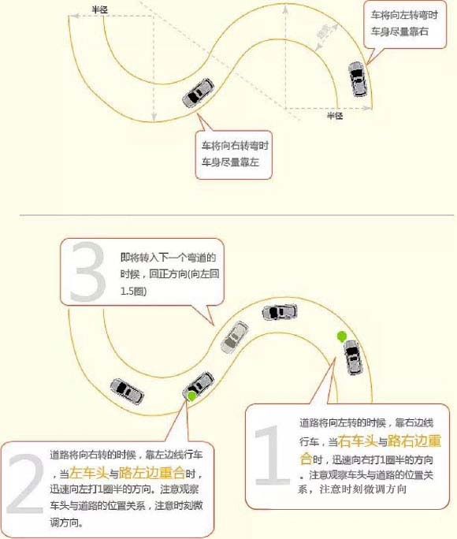

首先：调整座椅位置，使踩踏离合器和脚刹、油门时较舒服（尤其是便于使离合器处于半离合状态）
其次：调整左后视镜，使车身占后视镜约1/5（即在左后视镜中可以看见车左后下方）
然后：调整右后视镜，使车身占后视镜约1/5（即使右后门把手在右后视镜的左下方）
“逢左必先右，逢右必先左。”也就是说车将向左转弯时，车身尽量靠右。车将向右转弯时，车身尽量靠左。车进入弯道后尽量走大圈，处于弯道时，通过方向盘让里侧车盖头上小后视镜始终处于外侧白线边边缘，到S弯尽头回正方向。

1车辆驶出边缘线，不合格；
2车轮轧路边缘线，每次扣20分。